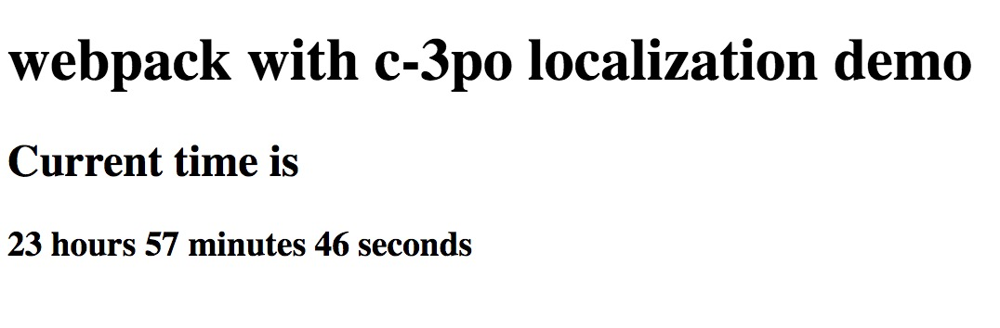
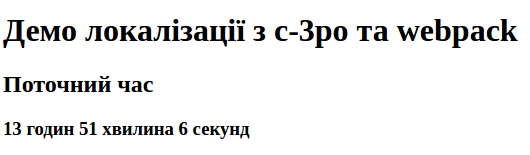

Localization with webpack
This short tutorial will demonstrate how ttag can be used with webpack. Both development and production setups will be described.
This tutorial is based on Webpack 2. It should work in a similar way with webpack 3/4 wihout much changes
- 1. Initial setup
- 3. Add a locale (
.pofile) - 4. Localization with dev setup
- 5. Localization with production setup
- 6. Results comparison
1. Initial setup
1.1 Why should I care about dev and prod setup?
There are different requirements to development and production setups.
Requirements for the dev setup:
- Faster builds.
- Simple setup.
- Fast feedback.
Production setup:
- Smaller assets.
- Less work to load locale (faster locale load).
According to this requirements, ttag provides you options for making efficient production and development setups.
1.2 Application overview
For demonstration purposes, we will implement simple clock application. An example is available on JSFiddle.
All sources for this example are available
under the examples directory of the ttag repository.
1.3 Installation
- First we need to create separate folder run
npm initand follow all installation instructions.
mkdir ttag-counter
cd ttag-couter
npm init
npm install --save ttag && npm install --save-dev babel-plugin-ttag
- Also we need to install webpack and babel loader for webpack.
Tip: follow the installation instructions from Babel official documetntaion
npm install --save-dev babel-loader babel-core babel-preset-env webpack
1.4 Basic app setup
Now we are ready to make a basic setup for our application. It will consist of an index.html and app.js files.
Let's add ./dist directory and add index.html there:
<!DOCTYPE html>
<html lang="en">
<head>
<meta charset="UTF-8">
<title>Webpack with ttag demo</title>
</head>
<body>
<div id="content"></div>
<script src="./app.js"></script>
</body>
</html>
Nothing special, just some html boilerplate.
Let's add app.js file also, that will contain our simple business logic:
import { ngettext, msgid, t } from 'ttag';
const content = document.getElementById('content');
const view = (hours, minutes, seconds) => {
const hoursTxt = `${hours} hours`;
const minutesTxt = `${minutes} minutes`;
const secondsTxt = `${seconds} seconds`;
return `
<h1>${ t`webpack with ttag localization demo` }</h1>
<h2>${ t`Current time is` }</h2>
<h3>${hoursTxt} ${minutesTxt} ${secondsTxt}</h3>
`
};
setInterval(() => {
const date = new Date();
content.innerHTML = view(date.getHours(), date.getMinutes(), date.getSeconds());
}, 1000);
This is simple program that will display the current time:

Let's make setup for webpack. Here is our webpack.config.js:
module.exports = {
entry: './app.js',
output: { filename: './dist/app.js' },
module: {
rules: [
{
test: /\.js$/,
exclude: /(node_modules|bower_components)/,
use: { loader: 'babel-loader' }
}
]
}
}
And now we can execute webpack to build our app.js file and open index.html in a browser.
1.5 Wrapping strings with ttag functions and tags
Let's wrap our literals in ngettext and t:
import { ngettext, msgid, t } from 'ttag';
const view = (hours, minutes, seconds) => {
const hoursTxt = ngettext(msgid`${hours} hour`, `${hours} hours`, hours);
const minutesTxt = ngettext(msgid`${minutes} minute`, `${minutes} minutes`, minutes);
const secondsTxt = ngettext(msgid`${seconds} second`, `${seconds} seconds`, seconds);
return `
<h1>${ t`webpack with ttag localization demo` }</h1>
<h2>${ t`Current time is` }</h2>
<h3>${hoursTxt} ${minutesTxt} ${secondsTxt}</h3>
`
};
Tip: Check both
ngettextfunction reference andtfunction reference
Let's rebuild webpack and see what do we have in a browser:

You can notice that plural forms are working without any extra configuration (i.e.: 1 second is displayed properly).
This is because ttag uses English locale by default.
2. Extracting translations to the .pot file
Let's extract our translations to template file (.pot). ttag will extract translations only if it has
extract.output` setting,
let's modify our webpack.config.js to be able to work in the extract mode.
module.exports = ({ extract } = {}) => { // webpack 2+ can accept env object
const ttag = {};
if (extract) {
// translations will be extracted to template.pot
ttag.extract = { output: 'template.pot'}
}
return {
entry: './app.js',
output: {
filename: './dist/app.js'
},
module: {
rules: [
{
test: /\.(js|jsx)$/,
use: {
loader: 'babel-loader',
options: {plugins: [['ttag', ttag]]}
}
}
]
}
}
};
Let's extract all translated strings by executing webpack --env.extract.
The resulting extracted .pot file:
msgid ""
msgstr ""
"Content-Type: text/plain; charset=utf-8\n"
"Plural-Forms: nplurals=2; plural=(n!=1);\n"
#: app.js:5
msgid "${ hours } hour"
msgid_plural "${ hours } hours"
msgstr[0] ""
msgstr[1] ""
#: app.js:6
msgid "${ minutes } minute"
msgid_plural "${ minutes } minutes"
msgstr[0] ""
msgstr[1] ""
#: app.js:7
msgid "${ seconds } second"
msgid_plural "${ seconds } seconds"
msgstr[0] ""
msgstr[1] ""
#: app.js:10
msgid "webpack with ttag localization demo"
msgstr ""
#: app.js:11
msgid "Current time is"
msgstr ""
3. Add a locale (.po file)
Let's add Ukrainian locale (uk). We can use msginit tool for creation of .po file with all appropriate to uk
locale headers:
msginit -i template.pot -o uk.po -l uk
Tip: If you want to skip this, just copy and paste it from the example source.
Either if you generated the uk.po from the pot file or copied from the example source - the next step will be to
add translations to uk.po. Translations can be added by translators (nontechnical persons) and developers.
It's up to your process.
Here are some translations:
#: app.js:5
msgid "${ hours } hour"
msgid_plural "${ hours } hours"
msgstr[0] "${ hours } година"
msgstr[1] "${ hours } години"
msgstr[2] "${ hours } годин"
#: app.js:6
msgid "${ minutes } minute"
msgid_plural "${ minutes } minutes"
msgstr[0] "${ minutes } хвилина"
msgstr[1] "${ minutes } хвилини"
msgstr[2] "${ minutes } хвилин"
#: app.js:7
msgid "${ seconds } second"
msgid_plural "${ seconds } seconds"
msgstr[0] "${ seconds } секунда"
msgstr[1] "${ seconds } секунди"
msgstr[2] "${ seconds } секунд"
#: app.js:10
msgid "webpack with ttag localization demo"
msgstr "Демо локалізації з ttag та webpack"
#: app.js:11
msgid "Current time is"
msgstr "Поточний час"
In the future you will add more string literals to your app, and you will need to update
.pofiles. we suggest you to usemsgmergefor that. Here is an example:msgmerge uk.po template.pot -U
4. Localization with dev setup
As mentioned earlier, the requirements for the development setup are:
- Faster builds.
- Simple setup.
- Fast feedback loop (validation).
To be able to use our translation we need to load the .po file somehow.
Let's use po-gettext-loader with json-loader
npm install --save-dev po-gettext-loader json-loader
Ok, we are ready to load our translations via loader, let's modify our webpack config:
const webpack = require('webpack');
module.exports = ({ extract } = {}) => { // webpack 2+ can accept env object
// ...
return {
// ...
module: {
rules: [
// ...
{
test: /\.po$/,
use: [
{loader: 'json-loader'}
{loader: 'po-gettext-loader'}
]
}
]
},
plugins: [
new webpack.DefinePlugin(
{ 'process.env.NODE_ENV': JSON.stringify(process.env.NODE_ENV || 'debug') }
)
]
}
};
Please note some of the changes here:
- Use
json-loaderafterpo-gettext-loader, because we need our translations object to be used on the client-side. - Added
DefinePluginto be able to split development and production logic inside the app.
Note: Webpack 4 has changed the way you deal with development and production setups, please take that into account when working with it.
After this step, we can simply require uk.po file and apply uk locale at the application startup.
Let's create a separate localeSetup.js file:
import { addLocale, useLocale } from 'ttag';
if (process.env.NODE_ENV !== 'production') {
const ukLocale = require('./uk.po');
addLocale('uk', ukLocale);
useLocale('uk');
}
Notice that locale initialization logic is wrapped with the
ifcondition because we need that logic only during the development setup. In the production mode all assets will be already translated on a build step.
After that we need to import localeSetup.js at the top of app.js file:
import './localeSetup';
Note:
import './localeSetup'must be the firstimportin your entry bundle, to setup locale before other exports evaluation.
As you know, ES6 exports are evaluated before module execution. So, to apply translations to exported values also, we need to make locale setup as soon as possible.
Let's build our app with npm run build and you will see that all translations are applied.
And here is what we can see in the browser:

A few cool things here:
- Translations are working.
- You can run webpack in watch mode and it will watch for changes in
.pofiles and will rebuild app if some translation is added or changed. - Validation is also working, just great!
I hope you have understood the main idea of how we can load locale in development mode. In the real app, you will don't know what locale is selected on a build step, so you may decide to place it somewhere in the initial app state or pass it through some global var, or you can use webpack code splitting features and load it asynchronously, it's up to your application requirements and design.
5. Localization with production setup
The main requirement for production setup are:
- Smaller resulting assets.
- Less work on a client to load locale.
babel-plugin-ttag allows you to precompile all your translations in the resulting bundles in compile time.
It will strip all ttag tags and functions and place all translations in their places. Little pay for
that feature is that we should make a separate build for each locale. I think it's not a big trade off for
making your end user happier.
babel-pugin-ttag will apply translations from some locale if resolve.translations
setting is present.resolve.translations must be set to the path to the .po file.
Note: we also should strip ttag tags and functions for the default locale. Default locale is resolved when
resolve.translationsis set with the"default"value.
5.1 Making separate build for each locale
Let's modify our webpack config in a way that it can configure ttag options to make an appropriate transformations for some locale.
module.exports = ({ extract, locale } = {}) => {
const ttag = {};
if (locale) { // we should pass default for the default locale.
ttag.resolve = { translations: locale !== 'default' ? `${locale}.po` : 'default' };
}
// ...
}
Let's also change the resulting output filename to be able to compare it with the previous versions:
output: {
filename: locale ? `./dist/app_${locale}.js` : './dist/app.js'
}
Let's build localized assets with commands webpack --env.locale=uk && webpack --env.locale=default.
Tip: if you are still using webpack 1, you can use simple env vars instead of webpack env. For example:
LOCALE=uk webpack && LOCALE=default webpack.
To see that it works le'ts modify src attribute in index.html:
<script src="./app_default.js"></script>
and
<script src="./app_uk.js"></script>
This step is done manually just for the demo purposes, in the real world url will be modified by html-webpack-plugin or some backend code rendering the page.
5.1 Replacing ttag library with a mock
So, if we are placing all translations at a build time there is no need to include the original
ttag library in the resulting bundle. There is special mock for that case inside ttag lib - ttag/dist/mock.
Let's add a webpack alias for that:
resolve: {
alias: {
'ttag': locale ? 'ttag/dist/mock' : 'ttag'
}
}
This will minimize the resulting bundle size. Don't forget to use NODE_ENV=production to avoid translations to be
bundled in the resulting assets.
6. Results comparison
Let's build all variants and compare the output size
webpack && NODE_ENV=production webpack --env.locale=uk && NODE_ENV=production webpack --env.locale=default
The resulting files inside ./dist:
17K app.js
5,5K app_default.js
6,1K app_uk.js
Minified versions:
6.9K app.js
1.8K app_default.js
1.9K app_uk.js
As you can see production setup reduced the resulting bundle size.